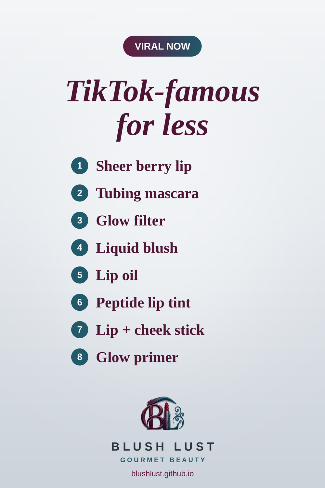

TikTok-Famous Makeup for Less: 8 Viral Dupes
The makeup everyone keeps posting about, and the cheaper dupes that get you the same look. Every pick is on Amazon.ca.
This post contains affiliate links. If you buy through them, we may earn a small commission at no extra cost to you. As an Amazon Associate I earn from qualifying purchases.
e.l.f. Hydrating Core Lip Shine in Ecstatic
A sheer, buildable berry that suits almost everyone. The e.l.f. shade Ecstatic gives the same easy wash of colour.
Shop the dupe on Amazon.ca →e.l.f. Lash XTNDR Tubing Mascara
Tubing mascara that coats each lash for long, defined, extension-like length that won't smudge.
Shop the dupe on Amazon.ca →e.l.f. Halo Glow Liquid Filter
Probably the most famous dupe on the internet. A glowy, blurring liquid you wear under foundation, mixed in, or alone for a soft-focus finish.
Shop the dupe on Amazon.ca →e.l.f. Camo Liquid Blush
A tiny dot goes a long way with both. Highly pigmented, blendable cheek colour for that flushed, just-pinched look.
Shop the dupe on Amazon.ca →NYX Fat Oil Lip Drip
Glossy, cushiony lip oil with a hint of tint. The NYX version is a fan favourite for the same juicy shine.
Shop the dupe on Amazon.ca →Rimmel Oh My Gloss! Butter Me Up Lip Butter
A cushiony, glossy lip butter with a sheer wash of colour, for that glazed-donut lip without the hype price.
Shop the dupe on Amazon.ca →e.l.f. Monochromatic Multi Stick
A creamy multi-use stick that melts into a soft, cream-to-powder flush on cheeks, lips and eyes.
Shop the dupe on Amazon.ca →e.l.f. Illuminating Putty Primer
A luminous base that gives skin a soft, healthy sheen under or over makeup.
Shop the dupe on Amazon.ca →
Prices change often — check Amazon.ca for the current price.